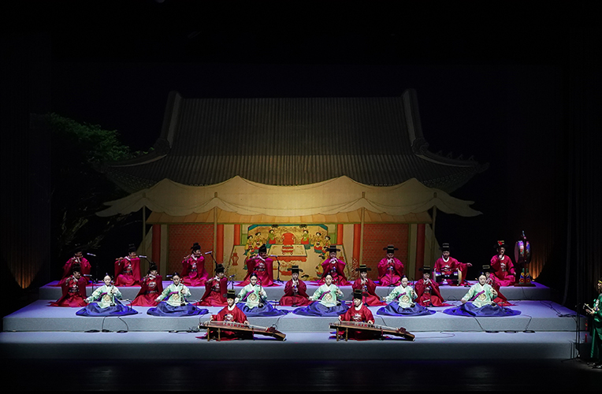
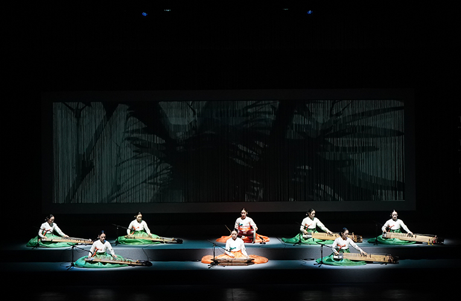

기악단 정기공연 <정악[正樂]의 멋>
- 일시
- 3. 10.(금) ~ 3.11.(토) 주중 19:30 주말 15:00
- 장소
- 연악당
- 관람료
- S석 10,000원 A석 8,000원
- 출연진/연출진
- 국립부산국악원 국악연주단 기악단/ 예술감독_유경조 연출_송혁규 구성작가_남화정 음향감독_이수용
- 관람연령
- 취학아동이상
눈을 감고 들어보세요! 정악의 정수를 느낄 수 있는 실감형 이머시브 음향!
정악의 고즈넉한 멋을 감상할 수 있는 기악곡 중 현악기 중심의 별곡(別曲)과 관악기를 위주로 한 관악영상회상(管樂靈山會想) 연주무대. 특히, 최고의 기량을 갖춘 국립부산국악원 연주자의 깊이있는 울림을 올곧이 선보이기 위해 실감음향 시스템을 도입했다.
정면, 좌우, 위아래 등에서 울리는 심감음향의 시스템은 관객 여러분께 정악의 중후함을 입체적으로 만끽할 수 있도록 최고의 음향을 선사할 것이다.
세부프로그램
1. 현악_'별곡' - 도드리 <수연장, 송구여 지곡> - 상현도드리 (7장) - 하현도드리 - 염불도드리 - 타령 - 군악 - 천년만세 <계면가락, 양청, 우조가락 도드리> 2. 관악_'영산회상' - 상령산 - 중령산 - 세령산 - 가락덜이 - 삼현도드리 - 염불도드리 - 타령 - 군악
* 공연내용과 일정은 사정에 따라 변경 될 수 있습니다.

